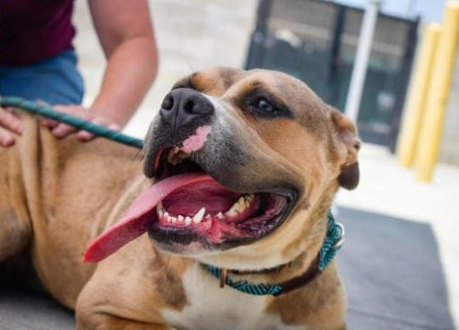
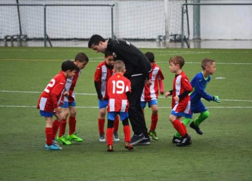

Free radio ads for the people doing the work
If your work helps people, we'll write your ad, record it and put it on local radio and streaming audio. Sponsors cover every cost.
If the work helps people, it may qualify for free audio advertising
Our free ads are for nonprofits, volunteer groups, community projects and everyday neighbors with something the whole area should hear. You don't need an organization, a budget or any experience with advertising to apply.
What to expect as a voice
You apply
Tell us who you help and what you want listeners to do. It takes about five minutes.
You join the waiting list
Once we approve your application, your cause is added to the waiting list that sponsors choose from.
You get sponsored
When a sponsor chooses you, we send you an email that says you've been sponsored, with the name of the sponsor who paid for your ad.
You approve the script
We send a draft within a few days. Change anything you like until it sounds like you.
We record it
We produce the finished 30-second ad and send you a copy to keep.
Your ad goes live
It plays on local radio and streaming audio for two to four weeks, and we send you the results.
How sponsors find you

Once you're approved, your cause gets its own listing on our waiting list with your message in your own words. Sponsors can choose you directly, or fund a curated group of causes that share your mission, such as music, ending homelessness or new parents. We place you in the group that fits your work, so the sponsors who care about it see you first.
Every listing has a meter that shows how close your ad is to being paid for. Gifts of any size add up, and when your meter reaches $250 we email you to say you've been sponsored, along with the name of the sponsor who made it happen.
From there we send your script, record the ad and put it on the air. When it finishes its run, you get a report showing how many times it played and how many people it reached.
Groups we put on the air
Here are some of the kinds of causes we make ads for. If yours isn't listed, apply anyway and we'll tell you if it fits.






Apply for a free ad Full eligibility rules What we won't air
Questions voices ask first
Is it really free?
Yes, all of it. You won't pay for the script, the recording or the airtime, because our sponsors cover the cost.
How long will we wait on the list?
That depends on how quickly sponsors fund causes like yours. We work through applications in the order they arrive, so applying now holds your place, and we email you the moment you're sponsored.
Will we know who sponsored us?
Yes. Your sponsored email names the sponsor, and the sponsor is thanked at the end of your ad.
Where does the ad play?
It plays on local radio and on streaming audio services such as Spotify and Pandora, aimed at listeners in your own area. Each ad runs for two to four weeks.
Can we use the ad anywhere else?
Yes. The finished ad is yours to keep, and you're welcome to post it on your website and social pages.
Your place in line starts with the form
It takes about five minutes, and you'll hear back from us by email.
Apply for a free ad